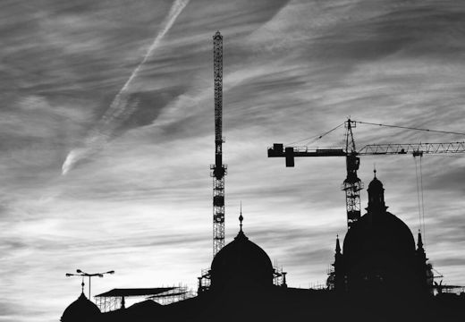
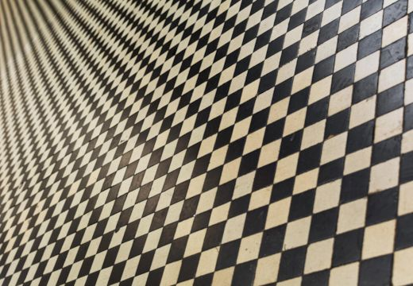
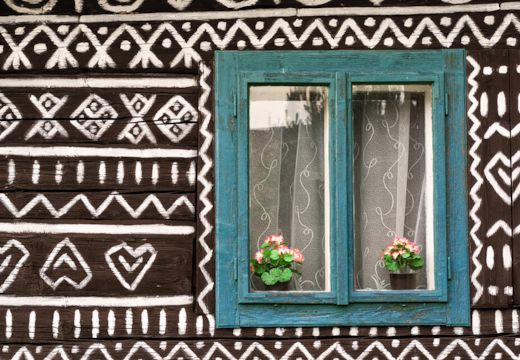
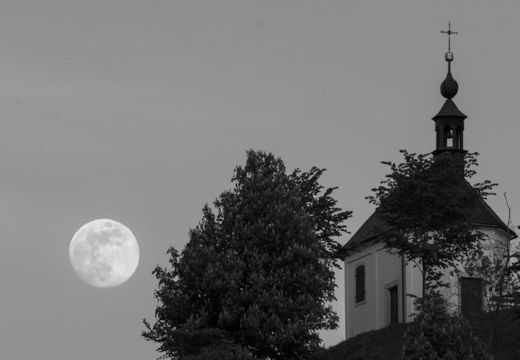
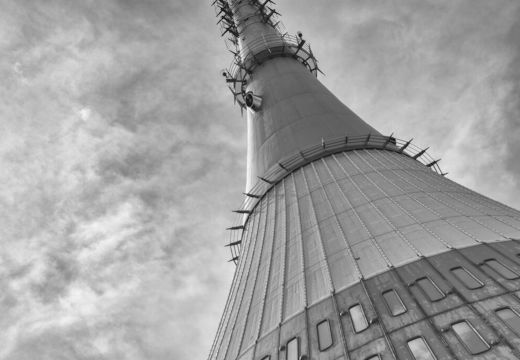
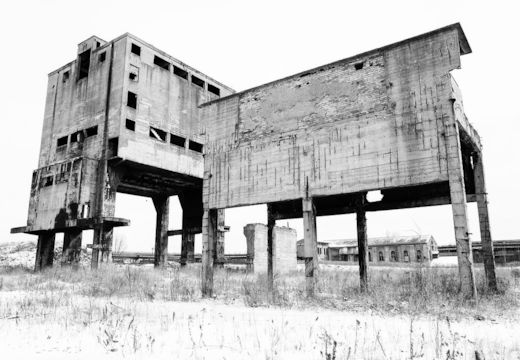
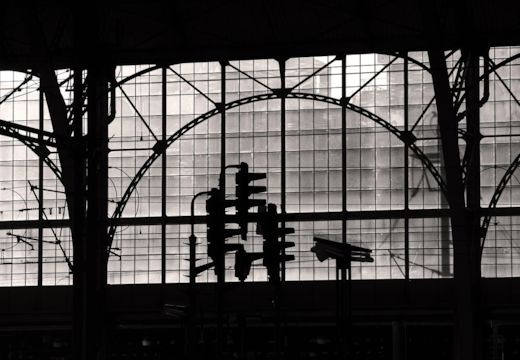

Reconstruction-of-the-National-Museum-in-Prague.jpg

black-and-white-floor-mosaic.jpg

blue-window-on-painted-wooden-house.jpg

church-and-moon.jpg
cicmany-house-detail.jpg
cicmany-village-house.jpg
factory-chimenys.jpg

jested-towerr.jpg

post-apocalyptic-factory.jpg

railway-station.jpg